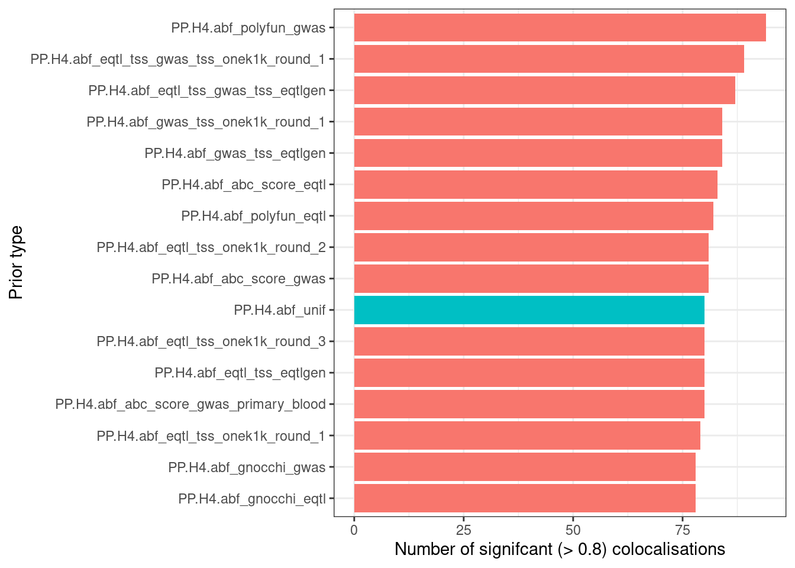
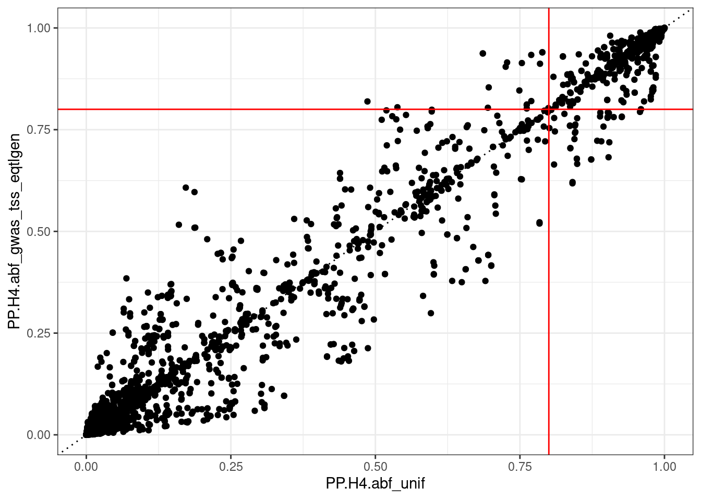

renv::load(here::here())- The project is out-of-sync -- use `renv::status()` for details.library(readr)
library(dplyr)
library(tidyr)
library(ggplot2)
library(forcats)
library(yaml)
library(glue)
devtools::load_all("~/coloc")renv::load(here::here())- The project is out-of-sync -- use `renv::status()` for details.library(readr)
library(dplyr)
library(tidyr)
library(ggplot2)
library(forcats)
library(yaml)
library(glue)
devtools::load_all("~/coloc")gwas_eqtl_colocs <- expand_grid(
chr = 1:22,
gwas_id_eqtl_id = c(
"AUTOIMMUNE-QTD000373", "AUTOIMMUNE-QTD000341", "AUTOIMMUNE-QTD000499", "AUTOIMMUNE-QTD000021", "AUTOIMMUNE-QTD000031"
)
) |>
separate_wider_delim(gwas_id_eqtl_id, "-", names = c("gwas_id", "eqtl_id")) |>
rowwise() |>
mutate(file = here::here(
glue("output/data/gwas-eqtl-coloc-{gwas_id}-{eqtl_id}-{chr}.rds")
)) |>
mutate(data = list(read_rds(file))) |>
unnest(data)gwas_eqtl_colocs |>
filter(PP.H4.abf_unif > 0.8) |>
filter(locus_gene_name == coloc_gene_name) |>
select(eqtl_id, locus_gene_name, coloc_gene_name, PP.H4.abf_unif) |>
print(n = 80)# A tibble: 80 × 4
eqtl_id locus_gene_name coloc_gene_name PP.H4.abf_unif
<chr> <chr> <chr> <dbl>
1 QTD000373 MMEL1 MMEL1 0.943
2 QTD000373 CEPT1 CEPT1 0.991
3 QTD000373 DENND2D DENND2D 0.991
4 QTD000373 GPR25 GPR25 0.885
5 QTD000341 MMEL1 MMEL1 0.922
6 QTD000341 VAV3 VAV3 0.999
7 QTD000499 MMEL1 MMEL1 0.939
8 QTD000499 SLC66A1 SLC66A1 0.865
9 QTD000021 MMEL1 MMEL1 0.905
10 QTD000021 FUBP1 FUBP1 0.999
11 QTD000031 MMEL1 MMEL1 0.951
12 QTD000031 TTC34 TTC34 0.991
13 QTD000031 SLC66A1 SLC66A1 0.824
14 QTD000031 DRAM2 DRAM2 0.991
15 QTD000031 CEPT1 CEPT1 0.991
16 QTD000031 DENND2D DENND2D 0.991
17 QTD000373 PUS10 PUS10 0.929
18 QTD000373 C2orf74 C2orf74 0.940
19 QTD000373 PPIL3 PPIL3 0.997
20 QTD000341 TPO TPO 0.993
21 QTD000341 C2orf74 C2orf74 0.921
22 QTD000341 ACTR1B ACTR1B 0.984
23 QTD000341 PPIL3 PPIL3 0.980
24 QTD000499 PPIL3 PPIL3 0.968
25 QTD000021 ADCY3 ADCY3 0.809
26 QTD000021 PUS10 PUS10 0.925
27 QTD000021 ANKRD36 ANKRD36 0.977
28 QTD000021 ACTR1B ACTR1B 0.962
29 QTD000021 PPIL3 PPIL3 0.995
30 QTD000031 PUS10 PUS10 0.912
31 QTD000031 ANKRD36 ANKRD36 0.983
32 QTD000031 ACTR1B ACTR1B 0.984
33 QTD000031 TYW5 TYW5 0.919
34 QTD000031 PPIL3 PPIL3 0.995
35 QTD000373 ANKRD55 ANKRD55 1.00
36 QTD000341 PDE8B PDE8B 0.990
37 QTD000031 ANKRD55 ANKRD55 1.00
38 QTD000021 H4C13 H4C13 0.918
39 QTD000031 H4C13 H4C13 0.977
40 QTD000031 BACH2 BACH2 0.999
41 QTD000373 IRF5 IRF5 0.994
42 QTD000341 IRF5 IRF5 0.989
43 QTD000021 IRF5 IRF5 0.906
44 QTD000341 RAB2A RAB2A 0.943
45 QTD000499 RAB2A RAB2A 0.944
46 QTD000341 RAB14 RAB14 0.866
47 QTD000341 NEK6 NEK6 0.990
48 QTD000021 TNFSF8 TNFSF8 0.984
49 QTD000021 TRAF1 TRAF1 0.927
50 QTD000373 SLC29A3 SLC29A3 0.999
51 QTD000341 NKX2-3 NKX2-3 1.00
52 QTD000341 IRF7 IRF7 0.900
53 QTD000341 DRD4 DRD4 0.838
54 QTD000021 LMNTD2 LMNTD2 0.968
55 QTD000373 METTL7B METTL7B 0.944
56 QTD000499 MARS1 MARS1 0.980
57 QTD000031 MARS1 MARS1 0.889
58 QTD000499 COG6 COG6 0.942
59 QTD000021 COG6 COG6 0.974
60 QTD000373 GINS2 GINS2 0.808
61 QTD000499 GINS2 GINS2 0.890
62 QTD000021 BRD7 BRD7 0.884
63 QTD000031 APOBR APOBR 0.998
64 QTD000373 ACAP1 ACAP1 0.997
65 QTD000373 KCTD11 KCTD11 0.997
66 QTD000031 ACAP1 ACAP1 0.997
67 QTD000031 KCTD11 KCTD11 0.997
68 QTD000373 CD226 CD226 0.989
69 QTD000373 IQCN IQCN 0.976
70 QTD000373 NTN5 NTN5 0.911
71 QTD000341 NTN5 NTN5 0.909
72 QTD000021 IQCN IQCN 0.975
73 QTD000373 UBASH3A UBASH3A 0.954
74 QTD000341 UBASH3A UBASH3A 0.954
75 QTD000031 UBASH3A UBASH3A 0.954
76 QTD000373 SYNGR1 SYNGR1 0.906
77 QTD000499 DDX17 DDX17 0.981
78 QTD000021 LIF LIF 0.998
79 QTD000021 DDX17 DDX17 0.920
80 QTD000031 DDX17 DDX17 0.962gwas_eqtl_colocs |>
filter(PP.H4.abf_unif > 0.8) |>
filter(locus_gene_name == coloc_gene_name) |>
summarise(n_eqtl_data_ids = n(), .by = locus_gene_name) |>
arrange(desc(n_eqtl_data_ids)) |>
print(n = 47)# A tibble: 47 × 2
locus_gene_name n_eqtl_data_ids
<chr> <int>
1 MMEL1 5
2 PPIL3 5
3 PUS10 3
4 ACTR1B 3
5 IRF5 3
6 UBASH3A 3
7 DDX17 3
8 CEPT1 2
9 DENND2D 2
10 SLC66A1 2
11 C2orf74 2
12 ANKRD36 2
13 ANKRD55 2
14 H4C13 2
15 RAB2A 2
16 MARS1 2
17 COG6 2
18 GINS2 2
19 ACAP1 2
20 KCTD11 2
21 IQCN 2
22 NTN5 2
23 GPR25 1
24 VAV3 1
25 FUBP1 1
26 TTC34 1
27 DRAM2 1
28 TPO 1
29 ADCY3 1
30 TYW5 1
31 PDE8B 1
32 BACH2 1
33 RAB14 1
34 NEK6 1
35 TNFSF8 1
36 TRAF1 1
37 SLC29A3 1
38 NKX2-3 1
39 IRF7 1
40 DRD4 1
41 LMNTD2 1
42 METTL7B 1
43 BRD7 1
44 APOBR 1
45 CD226 1
46 SYNGR1 1
47 LIF 1gwas_eqtl_colocs |>
filter(locus_gene_name == coloc_gene_name) |>
select(locus_gene_name, gwas_id, starts_with("PP.H4.abf")) |>
pivot_longer(-c(locus_gene_name, gwas_id), values_to = "pp_h4") |>
mutate(sig_coloc = pp_h4 > 0.8) |>
summarise(n_sig = sum(sig_coloc), .by = name) |>
mutate(is_unif = name == "PP.H4.abf_unif") |>
mutate(name = fct_reorder(factor(name), n_sig)) |>
ggplot(aes(name, n_sig, fill = is_unif)) +
geom_col() +
coord_flip() +
labs(
y = "Number of signifcant (> 0.8) colocalisations",
x = "Prior type"
) +
theme_bw() +
theme(legend.position = "none")
gwas_eqtl_colocs |>
filter(locus_gene_name == coloc_gene_name) |>
mutate(
sig_abc_score_gwas = PP.H4.abf_abc_score_gwas > 0.8,
sig_unif = PP.H4.abf_unif > 0.8
) |>
filter(sig_abc_score_gwas != sig_unif) |>
select(eqtl_id, coloc_gene_name,
PP.H4.abf_unif, PP.H4.abf_abc_score_gwas)# A tibble: 5 × 4
eqtl_id coloc_gene_name PP.H4.abf_unif PP.H4.abf_abc_score_gwas
<chr> <chr> <dbl> <dbl>
1 QTD000021 ADCY3 0.809 0.778
2 QTD000341 PSMD5 0.187 0.814
3 QTD000021 CNTRL 0.696 0.881
4 QTD000341 DRD4 0.838 0.795
5 QTD000341 GINS2 0.749 0.883gwas_eqtl_colocs |>
filter(locus_gene_name == coloc_gene_name) |>
mutate(
sig_gwas_tss_eqtlgen = PP.H4.abf_gwas_tss_eqtlgen > 0.8,
sig_unif = PP.H4.abf_unif > 0.8
) |>
filter(sig_gwas_tss_eqtlgen != sig_unif) |>
select(eqtl_id, coloc_gene_name,
PP.H4.abf_unif, PP.H4.abf_gwas_tss_eqtlgen)# A tibble: 6 × 4
eqtl_id coloc_gene_name PP.H4.abf_unif PP.H4.abf_gwas_tss_eqtlgen
<chr> <chr> <dbl> <dbl>
1 QTD000373 SLC66A1 0.686 0.937
2 QTD000341 SLC66A1 0.789 0.940
3 QTD000499 NEMP2 0.486 0.819
4 QTD000021 ADCY3 0.809 0.664
5 QTD000021 CNTRL 0.696 0.854
6 QTD000341 GINS2 0.749 0.846gwas_eqtl_colocs |>
filter(locus_gene_name == "GINS2") |>
filter(locus_gene_name == coloc_gene_name) |>
select(eqtl_id, coloc_gene_name,
PP.H4.abf_unif, PP.H4.abf_abc_score_gwas)# A tibble: 3 × 4
eqtl_id coloc_gene_name PP.H4.abf_unif PP.H4.abf_abc_score_gwas
<chr> <chr> <dbl> <dbl>
1 QTD000373 GINS2 0.808 0.892
2 QTD000341 GINS2 0.749 0.883
3 QTD000499 GINS2 0.890 0.975gwas_eqtl_colocs |>
ggplot(aes(PP.H4.abf_unif, PP.H4.abf_abc_score_gwas)) +
geom_point() +
geom_hline(yintercept = 0.8, col = "red") +
geom_vline(xintercept = 0.8, col = "red") +
theme_bw()
gwas_eqtl_colocs |>
ggplot(aes(PP.H4.abf_unif, PP.H4.abf_gwas_tss_eqtlgen)) +
geom_point() +
geom_abline(linetype = "dotted") +
geom_hline(yintercept = 0.8, col = "red") +
geom_vline(xintercept = 0.8, col = "red") +
theme_bw()